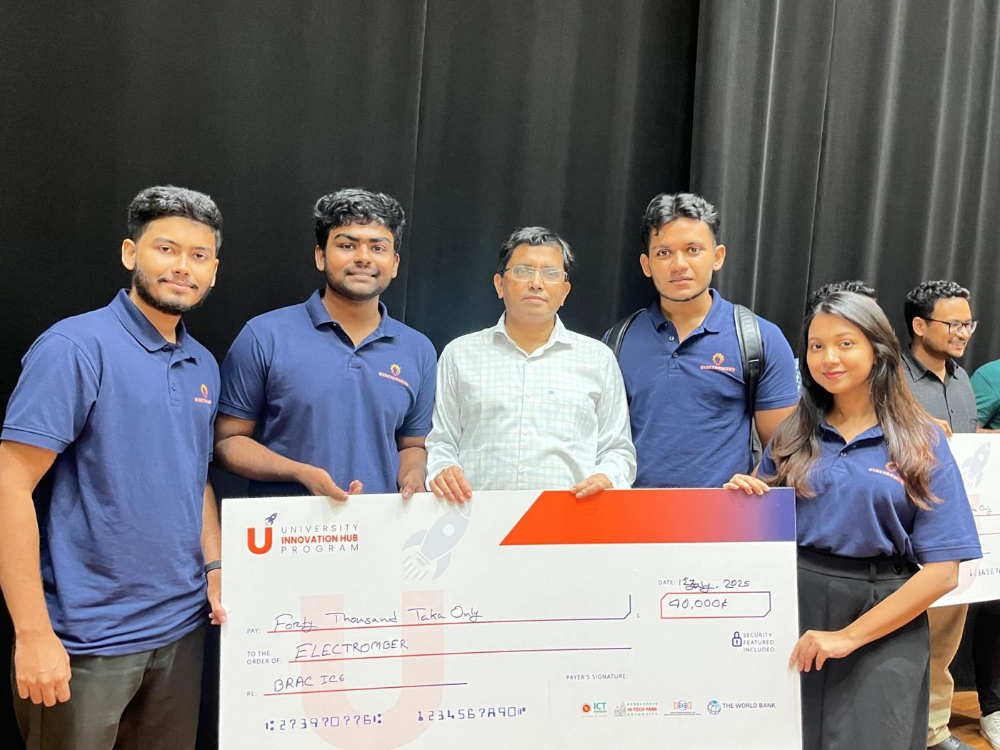

Student tech startup · 2024 to 2025
Electromber
Co-Founder & Chief Operating Officer
Prepared and presented the business case, with market analysis and financial projections, and coordinated the product, development and finance teams so priorities stayed aligned, tracking performance through live dashboards.
BDT 120,000Total funding
- Milestone 1BDT 40,000Initial seed funding
- Milestone 2BDT 80,000Additional funding
UIHP training and mentorshipSeveral months of training and guidance during the program, with Kazi Akib Annaf and Ananya Raihan (MBA, MPH).